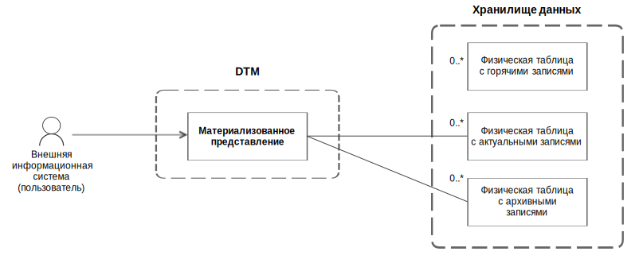
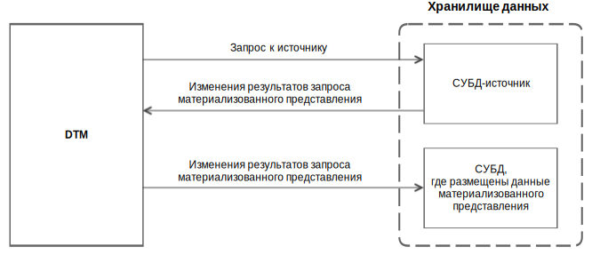
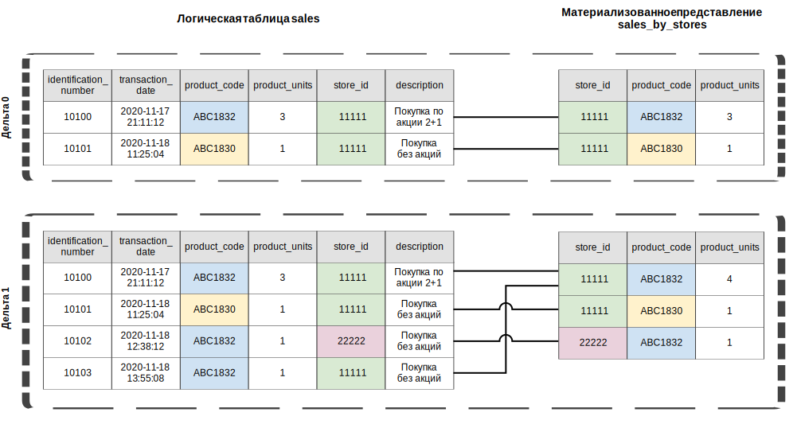

Материализованное представление
Материализованное представление — структурированная совокупность записей, содержащих результаты выполнения запроса к одной или нескольким логическим таблицам. Материализованное представление позволяет предварительно вычислить результат запроса и сохранить его для будущего использования.
Материализованное представление строится на основе данных одной СУБД хранилища (далее — СУБД-источник), а его данные размещаются в другой СУБД. Это позволяет создавать инсталляции, где одна СУБД служит полноценным хранилищем исходных данных, а остальные СУБД отвечают за быструю выдачу данных по запросам чтения. В текущей версии системы доступно создание материализованных представлений в ADG на основе данных из ADB.
Материализованное представление помогает ускорить запросы к данным в следующих случаях:
- если представление содержит результаты сложного запроса, который на исходных данных выполняется дольше;
- если запросы к представлению возвращают значительно меньше данных, чем запросы к исходным данным;
- если запросы относятся к категории, которую та СУБД хранилища, где размещены данные представления, выполняет более эффективно, чем СУБД-источник (например, ADG быстрее всех из поддерживаемых СУБД обрабатывает чтение по ключу).
Материализованное представление дает доступ к актуальным и архивным состояниях объектов. Чтение горячих данных из представления недоступно: это позволяет избежать чтения изменений, частично загруженных из СУБД-источника. Данные материализованного представления хранятся аналогично данным логических таблиц — в физических таблицах хранилища, которые автоматически создаются при создании представления.
Система поддерживает целостность данных материализованных представлений, периодически синхронизируя их с данными СУБД-источника (см. ниже).

Связи материализованного представления с физическими таблицами

Синхронизация материализованного представления
Материализованные представления можно создавать и удалять. Из материализованного представления можно запрашивать данные — так же, как из логических таблиц и логических представлений. Загрузка и выгрузка данных материализованных представлений не поддерживается.
При запросе данных из материализованного представления можно указать момент времени, по состоянию на который запрашиваются данные. Если момент времени не указан, система возвращает данные, актуальные на момент последней синхронизации представления, иначе — данные, актуальные на запрашиваемый момент времени.
При запросе данных на указанный момент времени может оказаться, что материализованное представление отстало от СУБД-источника и не содержит запрошенные данные. В этом случае система перенаправляет запрос к исходным таблицам СУБД-источника (см. раздел Маршрутизация запросов к данным материализованных представлений). Перенаправленный запрос может выполняться дольше, однако это позволяет получить данные, полностью актуальные на указанный момент времени.
Синхронизация материализованных представлений
Система периодически проверяет, нужно ли синхронизировать материализованные представления окружения с СУБД-источником. Периодичность проверки настраивается в конфигурации системы (см. параметр MATERIALIZED_VIEWS_SYNC_PERIOD_MS); по умолчанию проверка запускается раз в 5 секунд.
Проверка материализованных представлений запускается только по таймеру и не запускается по другим событиям, таким как создание материализованного представления или загрузка данных в СУБД-источник. При срабатывании таймера система проверяет, появились ли в СУБД-источнике дельты, закрытые после последней синхронизации и, если такие дельты появились, система синхронизирует материализованные представления с СУБД-источником.
Количество одновременно синхронизируемых представлений задается в конфигурации с помощью параметра MATERIALIZED_VIEWS_CONCURRENT. По умолчанию одновременно синхронизируется максимум два представления, а остальные, если они есть, ожидают следующего цикла проверки.
Данные представления синхронизируются отдельно по каждой закрытой дельте — с полным сохранением изменений, выполненных в этих дельтах. В каждой дельте для материализованного представления рассчитывается и сохраняется результат запроса, указанного при создании этого представления. Таким образом, материализованное представление имеет такой же уровень историчности данных, как и исходные логические таблицы, на которых построено представление.
Если системе не удалось синхронизировать материализованное представление, она делает несколько повторных попыток. Максимальное количество попыток синхронизации представления задается в конфигурации (см. параметр MATERIALIZED_VIEWS_RETRY_COUNT), по умолчанию система делает до 10 попыток. Если количество попыток исчерпано, но материализованное представление так и не удалось синхронизировать, система прекращает попытки синхронизировать это представление (до перезапуска). После перезапуска системы счетчики попыток по всем представлениям обнуляются, и, если какие-либо представления остались несинхронизированными, система возобновляет попытки их синхронизировать.
Пример синхронизации материализованного представления
Рассмотрим пример со следующими условиями:
- логическая БД
salesсодержит логическую таблицуsalesи материализованное представлениеsales_by_stores; - логическая БД содержит две дельты:
- дельта 0: в таблицу
salesзагружено две записи; - дельта 1: в таблицу
salesзагружено еще две записи с другими первичными ключами (новые записи);
- дельта 0: в таблицу
- материализованное представление
sales_by_storesсодержит результат агрегации и группировки данных таблицыsalesи построено на основе запроса:CREATE MATERIALIZED VIEW sales.sales_by_stores ( store_id INT NOT NULL, product_code VARCHAR(256) NOT NULL, product_units INT NOT NULL, PRIMARY KEY (store_id, product_code) ) DISTRIBUTED BY (store_id) DATASOURCE_TYPE (adg) AS SELECT store_id, product_code, SUM(product_units) as product_units FROM sales.sales WHERE product_code <> 'ABC0001' GROUP BY store_id, product_code DATASOURCE_TYPE = 'adb'
На рисунке ниже показан порядок синхронизации материализованного представления sales_by_stores. В каждой дельте рассчитывается и сохраняется сумма по столбцу product_units таблицы sales с группировкой по столбцам store_id и product_code. При этом неважно, когда было создано материализованное представление: до дельты 0, после дельты 1 или в какой-то момент между этими дельтами.

Пример синхронизации материализованного представления